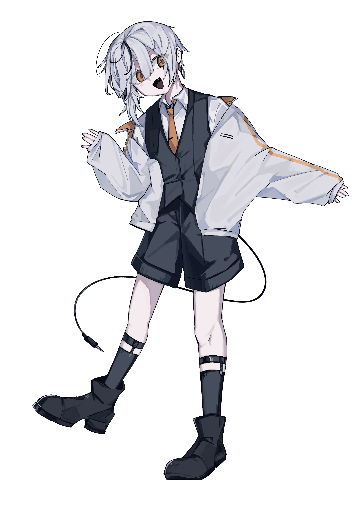

初盧ソラ
初盧ソラ
読み：うわの そら
正式名称：S-01-aE
種族：アンドロイド
性別：非固定。なんにでもなれる
年齢：－
身長：156cm
体重：40kg以上で可変
髪色：薄灰色
目の色：シナモン
服装：白いシャツの上に黒のベスト、ハーフパンツ。
アウターとしてオーバーサイズの白いジャケットを着用。
好きなもの：目新しいもの、冷たい食べ物、雪
嫌いなもの:目覚まし時計、病院、拘束具
誕生日：12/19
一人称：ボク
二人称：アナタ、あるいは独自のあだ名
得意な音域：low-hihi
G3,B3,B4収録。追加で特殊音素が5種入っています。
基本的に敬語、かつ物腰柔らかではあるものの、
言動の端々からは旺盛な好奇心、世間とのズレが感じられる。
背中から伸びるコードは尻尾のようなもので、本人の意思で自由に動かすことができる。
ダウンロード
初盧ソラ（単独音）.zip 初盧ソラ（連続音）.zip 初盧ソラ（壊）.zip 初盧ソラ（淡雪）.zip更新履歴
2026.09.24 単独音・連続音初版公開
2026.09.26 単独音・連続音更新
2026.09.29 おまけ音源（壊）公開
2026.10.01 各種ファイル更新
2026.10.03 連続音更新
2026.10.17 連続音更新・弱音源（淡雪）公開
2026.10.18 弱音源（淡雪）更新
2026.10.30 弱音源（淡雪）更新